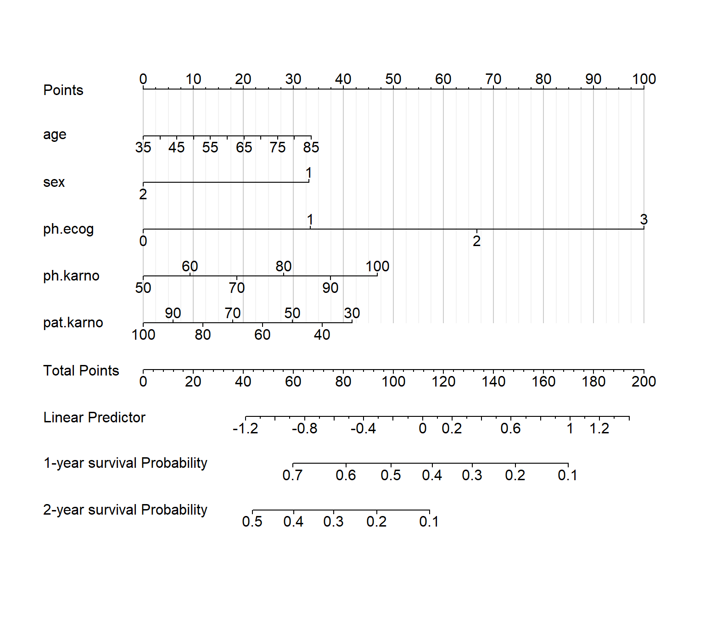
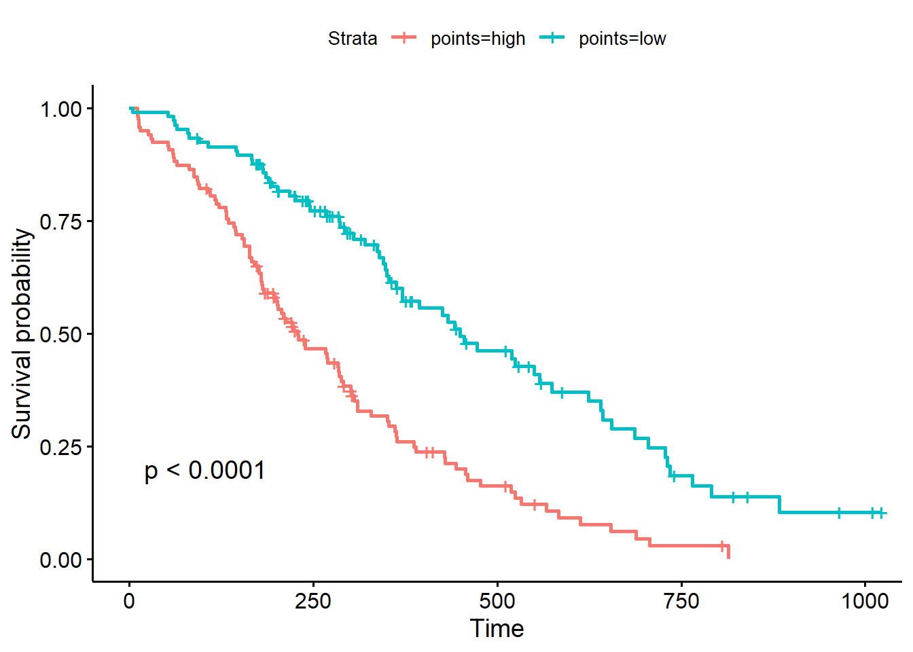

library(survival)
library(rms)
## Loading required package: Hmisc
##
## Attaching package: 'Hmisc'
## The following objects are masked from 'package:base':
##
## format.pval, units
## Warning in .recacheSubclasses(def@className, def, env): undefined subclass
## "ndiMatrix" of class "replValueSp"; definition not updated
rm(list = ls())
dim(lung)
## [1] 228 10
str(lung)
## 'data.frame': 228 obs. of 10 variables:
## $ inst : num 3 3 3 5 1 12 7 11 1 7 ...
## $ time : num 306 455 1010 210 883 ...
## $ status : num 2 2 1 2 2 1 2 2 2 2 ...
## $ age : num 74 68 56 57 60 74 68 71 53 61 ...
## $ sex : num 1 1 1 1 1 1 2 2 1 1 ...
## $ ph.ecog : num 1 0 0 1 0 1 2 2 1 2 ...
## $ ph.karno : num 90 90 90 90 100 50 70 60 70 70 ...
## $ pat.karno: num 100 90 90 60 90 80 60 80 80 70 ...
## $ meal.cal : num 1175 1225 NA 1150 NA ...
## $ wt.loss : num NA 15 15 11 0 0 10 1 16 34 ...9 计算列线图得分及危险分层
列线图是模型的图形化表达方式，通过列线图可以计算直观的看出某个患者的得分，方便分析患者的风险。关于列线图，我们介绍过很多次了，公众号后台回复列线图即可获取合集链接：
- Cox回归列线图（nomogram）的4种绘制方法
- Logistic回归列线图的4种绘制方法
- 限制性立方样条（RCS）的列线图怎么画？
- 列线图的本质
- Fine-Gray检验、竞争风险模型、列线图绘制
- 列线图增加彩色风险分层条带
有粉丝问如何根据列线图得分进行危险分层，其实思路很简单，先计算每个患者的得分，然后根据最佳截断值进行分层即可。这个最佳截断值，我们也介绍过非常多的方法了，公众号后台回复最佳截点，即可获取合集链接：
9.1 准备数据
使用R包自带数据。
9.2 建立模型和列线图
使用rms包构建模型和列线图。
大多数情况下都是使用1代表死亡，0代表删失，这个数据集用2代表死亡。在这里没有影响，但有的R包会报错，需要注意！
dd <- datadist(lung)
options(datadist = "dd")构建cox比例风险模型：
coxfit <- cph(Surv(time, status) ~ age + sex + ph.ecog + ph.karno + pat.karno,
data = lung, x=T,y=T,surv = T
)
# 构建生存函数，注意你的最大生存时间
surv <- Survival(coxfit)
surv1 <- function(x) surv(365,x) # 1年OS
surv2 <- function(x) surv(365*2,x) # 2年OS
nom <- nomogram(coxfit,
fun = list(surv1,surv2),
lp = T,
funlabel = c('1-year survival Probability',
'2-year survival Probability'),
maxscale = 100,
fun.at = c(0.95,0.9,0.8,0.7,0.6,0.5,0.4,0.3,0.2,0.1))然后就是画图：
plot(nom,
lplabel="Linear Predictor",
xfrac = 0.2, # 左侧标签距离坐标轴的距离
#varname.label = TRUE,
tcl = -0.2, # 刻度长短和方向
lmgp = 0.1, # 坐标轴标签距离坐标轴远近
points.label ='Points',
total.points.label = 'Total Points',
cap.labels = FALSE,
cex.var = 1, # 左侧标签字体大小
cex.axis = 1, # 坐标轴字体大小
col.grid = gray(c(0.8, 0.95))) # 竖线颜色
到这里都很简单。
9.3 计算分数
使用nomogramFormula计算每个患者的列线图得分。
两种方法，其中是使用formula_lp根据线性预测值计算，另一种是使用formula_rd根据原始数据（raw_data）计算，两种方法结果差不多，任选一种即可。
library(nomogramFormula)
results <- formula_lp(nomogram = nom)
points1 <- points_cal(formula = results$formula, lp = coxfit$linear.predictors)
#或者
#results <- formula_rd(nomogram = nom2)
#points1 <- points_cal(formula = results$formula, rd = tmp)
length(points1)
## [1] 223
head(points1)
## 1 2 3 4 5 6
## 129.96853 98.56938 90.51815 142.40181 102.54570 104.51291根据这个分数就可以分成高风险组/低风险组了。
9.4 分层
假如我们想根据列线图得分进行分层，分层后两组的K-M生存分析的p值最小，方法很多，任选一种即可，我这里就用surv_cutpoint演示。
但是计算出来的分数223个，原始数据是228个，因为数据有缺失值，在建立模型时有5个样本被删了，这时候你回过去找不一定找得到缺失值在哪（我能找到），所以建议一开始就把缺失值处理掉。
library(tidyr)
library(survminer)
# 去掉缺失值
tmp <- lung %>%
drop_na(ph.ecog,ph.karno,pat.karno)
dim(tmp)
## [1] 223 10
tmp$points <- points1
# 分层
res.cut <- surv_cutpoint(tmp, time = "time", event = "status",
variables = "points"
)
res.cat <- surv_categorize(res.cut)绘制生存曲线：
library("survival")
fit <- survfit(Surv(time, status) ~points, data = res.cat)
ggsurvplot(fit, data = res.cat, pval = T)
中间的数据展示省略了很多，还不熟悉这一套流程的可以一步一步的看，结合之前的推文。
9.5 扩展
这里是根据列线图的得分进行分层的，其实也可以直击根据模型得到的线性预测值进行分层，就是直接使用predict即可：
predict(coxfit,head(tmp))
## 1 2 3 4 5 6
## 0.3113300 -0.2213878 -0.3579849 0.5222729 -0.1539256 -0.1205499这个东西就是大家常见的risk-score，当然这只是其中一种计算方式，不同的模型计算方法略有不同。
而且cox回归得到的这个线性预测值又叫做预后指数（prognosis index, PI）。
预后指数越大，患者风险越大，预后越差。–孙振球医学统计学第4版P293
最早的建模类文章都是这么干的，现在也不少见。优点就是少了计算分数那一步，缺点嘛暂时没发现，毕竟都是模仿，你发文章只要把你的故事说清楚即可~